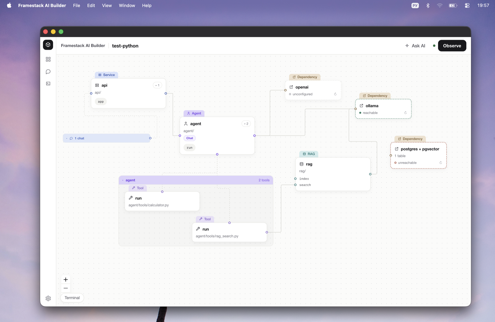
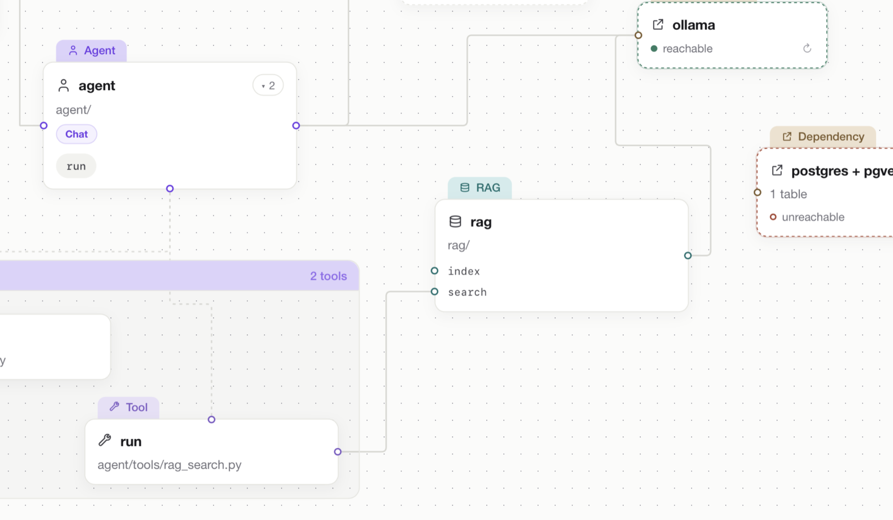
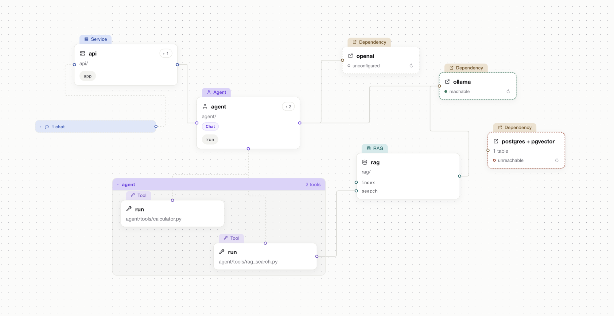

Your project
It stays plain Python
Delete Framestack and the project keeps running. Nothing of the builder is left in your code: no decorators, no imports, no manifest.
A visual editor over an ordinary Python project. The canvas is read from your folders and imports: change the code and the picture changes, move a card and the code stays exactly as it was.

The difference
In Langflow, Flowise, n8n, Dify and the rest, the source of truth is the tool's own flow file and the code is an export. A node there is green because you drew it. Here it works the other way round.
Your project
Delete Framestack and the project keeps running. Nothing of the builder is left in your code: no decorators, no imports, no manifest.
The canvas
It comes from the directory structure and the imports. No model takes part in that, so every read gives the same result.
The color
A node's color comes from a real run of the project's tests. Not "reviewed" — a test went into this code and passed.
Node color
Green
A test went into this code and passed.
Grey
No test has reached this code yet.
Red
A test went in and failed.
External things — the database, Ollama, model providers — carry a separate set of colors, because "we reached the database" is a different question from "this code is proven by a test".

How it works
Step 1
You write Python yourself, or ask the agent in the chat. Either way what lands in the project is ordinary Python.
Step 2
Framestack walks the folders and the imports. There is no second file to keep in sync with your code.
Step 3
Systems, their tools, routes, files, containers and dependencies. Every link on the canvas is an import in the code.
Step 4
Observe runs the project's tests and colors the canvas by what actually happened during the run.

What it does
Canvas
Systems, subsystems, tools, routes, files, containers and dependencies, laid out from the project itself.
Agent chat
The one way to change the project's structure from the app. You ask, the agent writes Python by the convention.
Block palette
A block does not draw a node. It hands the agent a task, and the node appears because code appeared.
Observe
Runs the project's tests and colors the canvas. A run that went out to the network does not count.
Node panel
Open a card and everything about it is there: settings, files, the last verdict, run, status, cost.
Settings
The panel edits real settings fields in the Python file, one line at a time — and says when .env overrides the value.
Run
Runs one system by calling its entry point in the project's own interpreter. Execution order lives in Python.
Deploy
docker compose up for the project, with the log in the app. Close the app and it shuts down what it raised.
Single service
A dependency backed by a container gets Start and Stop on its card. Postgres comes up without leaving the app.
Terminal
A slide-out panel with an ordinary terminal in the project directory.
Local models
Ollama: the models already on this machine, and pulling a new one straight from the panel.
MCP
Connect an MCP server and check it. Connected means it answered with its list of tools, and the app shows how many.
Run cost
Tokens and money counted per run, with history. When a model has no price, you get tokens and no sum.
Database
Reads from the code what the project stores: the tables, where they are declared, what it connects to.
Local
Everything happens on the machine in front of you. Nothing leaves the network except what your own code sends.
Who it's for
People building AI applications in Python: agents, RAG systems, APIs and workers. Not a tool for building without code.
What it doesn't do
It's made of it.